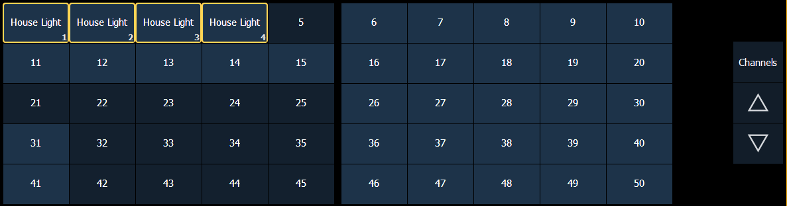

Select Channels From the Direct Selects
Direct selects provide one-touch selection of channels, groups, palettes, presets, effects and macros. You can configure an array of channels on direct select that display with paging buttons provided for easy scrolling. See Using Direct Selects
Open a direct select display by select {DS} from the Home Screen and then select the {Channels} button. When channels are posted to the direct selects, you can select one simply by pressing the channel’s touchbutton. The command line will show the appropriate channel and the selected direct select will be outlined in yellow.

Channel selection from the direct selects is an additive process. When a channel is selected, it is added to the current selection set. To select only one channel and deselect all others, double-press the channel touchbutton.
For Example:
- If channels [1] [Thru] [5] are selected from the keypad, pressing {Channel 6} from the direct selects adds channel 6 to the current channel selection.
- If channels [1] [Thru] [5] are selected from the keypad, pressing {Channel 6} {Channel 6} deselects channels 1 through 5 and selects channel 6.
The following examples illustrate the various methods of selecting channels using the direct selects:
- {Channel 1} - adds channel 1 to the currently selected channels, if not currently selected.
- This is similar to pressing [+] [1] [Enter] from the keypad. However if channel 1 were currently selected when you pressed {Channel 1}, this would deselect channel 1 from the channel selection.
- {Channel 5} {Channel 6} - adds channels 5 and 6 to the current channel selection.
- This is similar to pressing [+] [5 [+] [6] [Enter] from the keypad.
- {Channel 5} {Channel 5} - selects channel 5 and deselects all other channels.
- This is similar to pressing [5] [Enter] on the keypad, when the previous instruction is terminated.